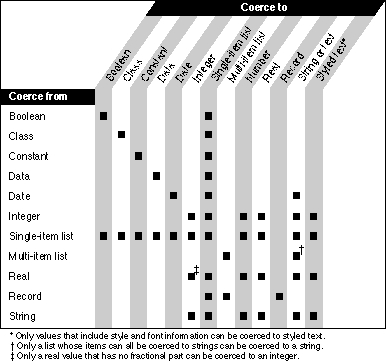

Coercing Values
AppleScript coerces values in two ways:The As operator specifies a particular coercion. You can use the As operator to coerce a value to the correct class before using it as a command parameter or operand. For example,
- in response to the As operator
- automatically, when a value is of a different class than was expected for a particular command or operation
set myString to 2 as stringcoerces the integer2into the string"2"before storing it in the variablemyString. Similarly,"2" as integer + 8coerces the string"2"to the integer2, so that it can be added to the other
operand,8.If you provide a command parameter or operand of the wrong class, AppleScript automatically coerces the operand or parameter to the expected class, if possible. For example, when AppleScript executes this statement,
repeat ( word 2 of document "Big" of application ÿ "Scriptable Text Editor") times display dialog "Hello" end repeatit expects the number of times to be an integer. To coerceword 2 of document "Big" of application "Scriptable Text Editor"to
an integer, AppleScript gets the value of word 2 of document "Big"
of application "Scriptable Text Editor"--a string--and then coerces it to an integer, if possible.Not all values can be coerced to all other classes of values. Figure 3-3 summarizes the coercions that AppleScript supports. To use the figure, find the class of the value to be coerced in the column at the left. Search across the table to the column labeled with the class to which you want to coerce the value. If there is a square at the intersection, then AppleScript supports the coercion.
Reference values are not included in the table because applications determine whether the value of an object specified by a reference value can be coerced to a desired class.
For more information about each coercion, see the corresponding value class definitions in this chapter.
Figure 3-3 Coercions supported by AppleScript
- Note
- When coercing strings to values of class Integer, Number, or Real or vice versa, AppleScript uses the current settings in the Numbers control panel for decimal and thousands to determine what separators to use in the string.
- When coercing strings to values of class date or vice versa, AppleScript uses the current settings in the Date & Time control panel for date and time format.

Three of the identifiers mentioned at the top of Figure 3-3 act only as synonyms for other value classes: "number" is a synonym for either "integer" or "real," "text" is a synonym for "string," and "styled text" is a synonym for a string that contains style and font information. You can coerce values using these synonyms, but the class of the resulting value is always the appropriate value class, not the synonym. Here are some examples:
set x to 1.5 as number class of x --result: real set x to 4 as number class of x --result: integer set x to "Hello" as text class of x --result: string